대기환경산업기사 (2008-09-07 기출문제)
1과목: 대기오염개론
1. 다음 실내오염물질에 관한 설명으로 가장 거리가 먼 것은?
- 라돈은 자연계의 물질 중에 함유된 우라늄이 연속 붕괴하면서 생성되는 라듐이 붕괴할 때 생성되는 것으로서 무색, 무취이다.
- 포름알데히드는 자극성 냄새를 갖는 가연성 무색기체로 폭발의 위험성이 있으며, 살균 방부제로도 이용된다.
- VOCs의 인체영향으로 벤젠은 피부를 통해 약 50%정도 침투되어, 체내에 흡수된 벤젠은 주로 근육조직에 분포하게 된다.
- 석면은 자연계에서 산출되는 길고, 가늘고, 강한 섬유상 물질로서 내열성, 불활성, 절연성의 성질을 갖는다.
(정답률: 알수없음)

2. 다음 중 온실효과에 대한 기여도가 가장 큰 것은?
- CH4
- CFC 11 ＆ 12
- N2O
- CO2
(정답률: 알수없음)
3. 지상으로부터 500m까지의 평균 기온감율은 1.18℃/100m이다. 100m고도에서의 기온이 16.2℃라 하면 고도 440m에서의 기온은?
- 10.6℃
- 11.8℃
- 12.2℃
- 13.4℃
(정답률: 알수없음)
4. 대기권의 오존층과 관련된 설명으로 가장 거리가 먼 것은?
- 오존농도의 고도분포는 지상 약 35km에서 평균적으로 약 10ppb의 최대농도를 나타낸다.
- 지구전체의 평균 오존량은 약 300Dobson 전후이지만, 지리적으로 또는 계절적으로 평균치의 ±50%정도까지 변화한다.
- 290nm 이하의 단파장인 UV-C는 대기 중의 산소와 오존분자등의 가스 성분에 의해 그 대부분이 흡수되어 지표면에 거의 도달하지 않는다.
- 오존의 생성 및 분해반응에 의해 자연상태의 성층권 영역에서는 일정한 수준의 오존량이 평형을 이루고, 다른 대기권영역에 비해 오존 농도가 높은 오존층이 생긴다..
(정답률: 알수없음)
5. 굴뚝 직경 3m, 배출속도 10m/sec, 배출온도 500K, 대기온도 27℃, 풍속 4.2m/sec일 때, 유효상승고(Δh)는? (단,
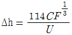
, C = 1.58,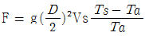
를 이용하여 계산할 것)- 약 226 m
- 약 259 m
- 약 309 m
- 약 348 m
(정답률: 알수없음)
6. 다음 중 대기오염물질과 관련이 적은 사건은?
- 포자리카 사건
- 뮤즈밸리 사건
- 도쿄 요꼬하마 사건
- 가네미유 사건
(정답률: 75%)
7. 다음 오염물질로 가장 적합한 것은?
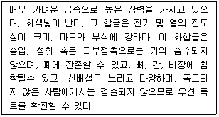
- 크롬
- 비소
- 셀레늄
- 베릴륨
(정답률: 알수없음)
8. 굴뚝에서 배출되는 연기의 형태가 Lofting형 일 때의 대기상태로 옳은 것은? (단, 보기 중 상과 하의 구분은 굴뚝 높이 기준)
- 상 : 불안정, 하 : 불안정
- 상 : 안정, 하 : 안정
- 상 : 안정, 하 : 불안정
- 상 : 불안정, 하 : 안정
(정답률: 알수없음)
9. 다음 역전 중 공중역전은?
- 복사역전
- 접지역전
- 이류성역전
- 침강역전
(정답률: 알수없음)
10. 연돌내의 배출가스 평균온도는 320℃, 배출가스속도는 7m/s, 대기온도는 25℃이다. 굴뚝의 지름이 600cm, 풍속이 5m/s 일 때, 통풍력을 65mmH2O로 하기 위한 연돌의 높이는? (단, 공기와 배출가스의 비중량은 1.3kg/Nm3, 연돌내의 압력손실은 무시한다)
- 약 85 m
- 약 95 m
- 약 110 m
- 약 135 m
(정답률: 42%)
11. '분산모델'에 관한 설명으로 거리가 먼 것은?
- 미래의 대기질을 예측할 수 있다.
- 2차 오염원의 확인이 가능하다.
- 지형 및 오염원의 조업조건에 영향을 받지 않는다.
- 새로운 오염원이 지역내에 생길 때, 매전 재평가를 하여야 한다.
(정답률: 알수없음)
12. 대기 중 이산화탄소에 대한 설명으로 가장 거리가 먼 것은?
- 고층대기에서 광화학적인 분해반응을 일으키는 경우를 제외하면 대류권내에서는 화학적으로 극히 안정한 편이다.
- 수증기와 함께 지구 온난화에 중요하게 기여하고 있는 기체이다.
- 전지구적인 배출량은 자연적인 배출량보다 화석연료 연소등에 의한 인위적인 배출량이 훨씬 많다.
- 미국 하와이 마우나로아에서 측정한 CO2 계절별 농도는 1년을 주기로 봄ㆍ여름에는 감소하는 경향을 나타낸다.
(정답률: 60%)
13. 다음 광화학반응에 관한 설명 중 가장 거리가 먼 것은?
- NO광산화율이란 탄화수소에 의하여 NO가 NO2로 산화되는 율을 뜻하며, ppb/min의 단위로 표현된다.
- 일반적으로 대기에서의 오존농도는 NO2로 산화된 NO의 양에 비례하여 증가한다.
- 과산화기가 산소와 반응하여 오존이 생성될 수도 있다.
- 오존의 탄화수소 산화(반응)율은 원자상태의 산소에 의한 탄화수소의 산화에 비해 빠르게 진행된다.
(정답률: 알수없음)
14. 경도풍은 다음의 3가지 힘이 평형을 이루면서 부는 바람을 말한다. 이와 관련이 가장 적은 힘은?
- 마찰력
- 기압경도력
- 원심력
- 전향력
(정답률: 알수없음)
15. 특정물질의 화학식 및 오존 파괴지수의 연결로 틀린 것은?
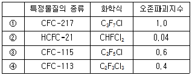
- ①
- ②
- ③
- ④
(정답률: 알수없음)
16. 다음은 오존의 생성원에 관한 설명이다. ( )안에 알맞은 것은?
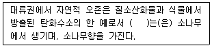
- 사이토카닌
- 에틸렌
- ABA
- 테르펜
(정답률: 알수없음)
17. 다음 대기오염물질로 가장 적합한 것은?
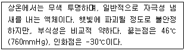
- CS2
- COCl2
- Br2
- HCN
(정답률: 알수없음)
18. 다음 중 광화학 반응의 결과로 생성되는 오염물질로 가장 거리가 먼 것은?
- Hydroperoxide 화합물
- Phenol
- H2O2
- Ketone
(정답률: 알수없음)
19. 대기오염물질과 그 영향에 대한 설명 중 가장 거리가 먼 것은?
- CO : 혈액내 Hb(헤모글로빈)과의 친화력이 산소의 약 21배에 달해 산소운반능력을 저하시킨다.
- NO : 무색의 기체로 혈액내 Hb과의 결합력이 CO보다 수백배 더 강하다.
- O3 및 기타 광화학적 옥시던트 : DNA, RNA에도 작용하여 유전인자에 변화를 일으킨다.
- HC : 올레핀계 탄화수소는 광화학적 스모그에 적극 반응하는 물질이다.
(정답률: 알수없음)
20. 입자상 물질 측정방법에 관한 설명이다. ( )안에 알맞은 것은?
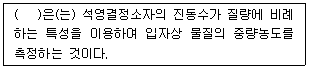
- 다단식 충돌판 측정법
- 정전식 분급법
- Piezobalance
- 응축핵 계수법
(정답률: 알수없음)
2과목: 대기오염 공정시험 기준(방법)
21. 굴뚝에서 배출되는 먼지측정시 굴뚝의 지름이 2.5m의 원형 굴뚝의 측정점수는?
- 4
- 8
- 12
- 16
(정답률: 알수없음)
22. 굴뚝 배출가스 중의 SO2량이 860mg/Sm3일 때 ppm으로 환산한 값은? (단, 표준상태 기준)
- 약 300 ppm
- 약 800 ppm
- 약 1200 ppm
- 약 2457 ppm
(정답률: 50%)
23. 산업시설 등에서 덕트로 배출되는 가스 중 휘발성 유기화합물질에 적용되는 시료채취방법에 관한 설명으로 거리가 먼 것은?
- 흡착관방법의 시료흡인속도는 100~250mL/min정도로 하며, 시료채취량은 1~5L정도가 되도록 한다.
- 흡착관방법에서는 시료를 채취한 흡착관의 양쪽 끝단을 불소수지 재질의 마개를 이용하여 단단히 막고 불소수지 재질의 필름등으로 밀봉하여 외부공기와의 접촉을 차단한다.
- 테들라 백 방법에서 테들라 백을 재사용시에는 제로가스와 동등 이상의 순도를 가진 아르곤가스를 채운후에 24시간동안 백을 진공보관후 퍼지조작을 반복한다.
- 테들라 백 방법에서는 2~10L 규격의 백을 사용하여 1~2L/min 정도로 시료를 흡인한다.
(정답률: 알수없음)
24. 다음 중 이온크로마토그리프법에서 일반적으로 사용되는 검출기의 종류와 거리가 먼 것은?
- 전기전도도 검출기
- 전자포획형 검출기
- 자외선 및 가스선 흡수 검출기
- 전기화학적 검출기
(정답률: 알수없음)
25. 굴뚝 배출가스 내의 염화수소 분석방법 중 이온전극법을 이용한 검량선 작성에 관한 설명으로 거리가 먼 것은?
- 염소이온 전극을 사용할 때에는 염소이온 표준액(0.01mg Cl-/mL)에 담그고, 지시치가 안정되고 나서 전위를 측정한다.
- 자석교반기의 혼합속도에서 전위차계의 지시가 불안정해지는 경우에는 비교전극의 저항이 커져 있는 수가 있다.
- 비교전극에서 외부액 접속부가 슬립상인 경우 슬립을 너무 조이면 외부액의 유출이 많고, 너무 풀어주면 저항이 커지므로 적당하게 조일 필요가 있다.
- 액온이 1℃ 변화하면 약 1mV(측정치의 4%에 상당) 변동한다.
(정답률: 알수없음)
26. 다음은 환경대기중 시료채취방법에 관한 설명이다. 가장 적합한 것은?
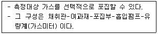
- 용기포집법
- 여지포집법
- 고체포집법
- 용매포집법
(정답률: 알수없음)
27. 굴뚝 배출가스 내의 페놀시료 채취방법 중 용액흡수법에 관한 설명으로 가장 거리가 먼 것은?
- 시료가스 채취관은 석영관, 스테인레스강관, 4불화 메틸렌수지관등을 사용한다.
- 시료중의 페놀류와 수분이 응축하지 않도록 시료가스 채취관과 흡수병 사이를 가열해야 한다.
- 채취관과 삼방콕크등 가열되는 접속부분은 갈아 맞춤 또는 실리콘 고무관을 사용하며, 삼방콕크 등의 갈아 맞춤 부분에는 그리이스를 발라서는 안된다.
- 시료 중에 먼지가 혼입되는 것을 방지하기 위하여 채취관의 앞 끝에 알말리 유리솜등을 넣는다.
(정답률: 알수없음)
28. 굴뚝 배출가스 중의 페놀류의 분석방법에 관한 설명으로 옳지 않은 것은?
- 분석방법으로는 자외선 가시선 분광법(흡광광도법)과 가스크로마토그래프법이 있다.
- 4-아미노안티피린법은 시료중의 페놀류를 수산화나트륨용액(0.4W/V%)에 흡수시켜 포집하고, 이 용액의 pH를 10±0.2로 조절하여 분석한다.
- 가스크로마토그래프법은 시료중의 페놀류를 수산화나트륨용액(0.4W/V%)으로 흡수 포집하여 이 용액을 염기성으로 한 후 초산에틸로 용매를 추출하여 TCD로 정량한다.
- 시료채취방법중 포집병법은 시료중의 페놀류의 농도가 높고 직접 가스크로마토그래프법으로 분석되는 경우에 주로 적용된다.
(정답률: 알수없음)
29. 페놀디술폰산법에서 질소산화물의 농도 C(V/V ppm) 계산식으로 옳은 것은? (단, Vs : 시료가스채취량(㎖, 0℃, 1기압), n : 분석용 시험용액의 희석배수, V : 검량선으로 부터 구한 질소화합물(mL))
- C = 1000nV / Vs
- C = 1000V / nVs
- C = 1,000,000V / nVs
- C = 1,000,000nV / Vs
(정답률: 40%)
30. 환경대기 중의 옥시단트(오존으로서) 농도 측정법의 하나인 화학발광법(자동연속측정법)의 측정원리 및 성능에 대한 설명으로 거리가 먼 것은?
- 측정범위는 원칙적으로 0.5ppm O3로 한다.
- 오존과 에틸렌 가스가 반응할 때 생기는 발광도가 오존 농도와 비례관계가 있다는 것을 이용한다.
- 최저감지농도는 0.02ppm이다.
- 방해물질로는 수분에 대해 약간 영향을 받으나 다른 물질에 대하여는 거의 영향을 받지 않는다.
(정답률: 알수없음)
31. 굴뚝 배출가스 내의 산소측정법 중 자동측정기에 의한 방법 설명 중 옳지 않은 것은?
- 자기식방법은 체적자화율이 큰 가스의 영향을 무시할 수 있는 경우에 적용할 수 있다.
- 자동측정기에 의한 방법은 자기식과 전기화학식으로 나눌수 있다.
- 전기화학식은 질코니아 방식과 전극방식으로 나눌수 있다.
- 자기식은 자기풍방식에는 담벨형과 압력검출형이 있다.
(정답률: 알수없음)
32. 굴뚝 배출가스 중의 무기 불소화합물을 불소 이온으로 분석하는 방법에 관한 설명으로 거리가 먼 것은?
- 용량법은 불소 이온을 방해이온과 분리한 다음 완충액을 가하여 pH를 조절하고 네오트린을 가한 다음 수산화나트륨 용액으로 적정한다.
- 시료 채취관은 배출가스 중의 무기 불소화합물에 의하여 부식되지 않는 불소수지관, 스테인레스강관, 구리관 등을 사용한다.
- 란탄-알리자린 콤플렉숀법은 시료가스 중의 미량의 알루미늄(Ⅲ), 철(Ⅱ), 구리(Ⅱ)등의 중금속 이온이 공존하면 영향을 미치므로 증류에 의해 분리한 후 정량한다.
- NaF로 불소이온 표준액을 조제한다.
(정답률: 알수없음)
33. 환경대기 중의 시료채취방법 중 고용량 공기포집법(High Volume Air Sampler)의 포집용 여과지에 과한 설명으로 가장 거리가 먼 것은?
- 입자상 물질의 포집에 사용하는 여과지는 0.5㎛되는 입자를 95% 이상 포집할 수 있어야 한다.
- 흡수성은 작고, 가스상 물질의 흡착도 적은 것이어야 한다.
- 분석에 방해되는 물질은 함유되지 않은 것이어야 한다.
- 사용되는 여과지의 재질은 일반적으로 유리섬유, 석영섬유, 폴리스틸렌, 불소수지 등이다.
(정답률: 알수없음)
34. 다음은 굴뚝 배출가스 중의 일산화탄소 분석방법에 관한 설명이다. 가장 적합한 것은?
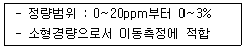
- 원소분석법
- 가스크로마토그래프법
- 이온전극법
- 정전위전해법
(정답률: 20%)
35. 굴뚝 배출가스 내의 총브롬의 분석 중 자외선 가시선 분광법(흡광광도법)에서 사용되는 흡수액으로 옳은 것은?
- 수산화나트륨(0.4W/V%) 용액
- 과망간산칼륨(0.4W/V%) 용액
- 염산(1+1) 용액
- 과산화수소수(3%) 용액
(정답률: 알수없음)
36. 굴뚝 배출가스 중 알데히드 및 케톤화합물(카르보닐화합물)의 분석방법으로 거리가 먼 것은?
- Methyl Ethyl Ketone 법
- HPLC 법
- Chromotropic Acid법
- Acetyl Acetone법
(정답률: 40%)
37. 굴뚝 배출가스 중 이황화탄소의 자외선 가시선 분광법(흡광광도법)에 관한 설명으로 옳은 것은?
- 피리딘-피라졸론의 흡광도를 620nm 부근의 파장에서 측정한다.
- 아미노디메틸아닐린의 흡광도를 670nm 부근의 파장에서 측정한다.
- 디에틸 디티오카바민산동의 흡광도를 435nm 부근의 파장에서 측정한다.
- 다이페닐카바지드의 흡광도를 540nm 부근의 파장에서 측정한다.
(정답률: 알수없음)
38. 자외선 가시선 분광법(흡광광도법)의 장치에 관한 설명으로 거리가 먼 것은?
- 자외부의 광원으로는 주로 중수소 방전관을 사용하고, 가시부와 근적외부의 광원으로는 주로 텅스텐램프를 사용한다.
- 측광부에서 광전관, 광전자증배관은 주로 자외 내지 가시파장 범위에서 사용된다.
- 단색화장치로는 프리즘, 회절격자 또는 이 두가지를 조합시킨 것을 사용한다.
- 광전광도계는 파장선택부에 단색화장치를 사용한 장치로 복광속형이 많다.
(정답률: 알수없음)
39. 비분산 적외선 분석법에 관한 설명으로 가장 거리가 먼 것은?
- 비분산 검출기를 이용하여 적외선 분산 변화량을 측정하여 시료 중 목적성분을 구하는 방법이다.
- 회전섹타의 단속방식에는 1~20Hz의 교호단속 방식과 동시단속 방식이 있다.
- 광학필터에는 가스필터와 고체필터가 있다.
- 광원은 원칙적으로 니크롬선 또는 탄화규소의 저항체에 전류를 흘려 가열한 것을 사용한다.
(정답률: 알수없음)
40. 굴뚝 배출가스의 유속을 피토관으로 측정할 때 측정조건이 다음과 같았다. 이 배출가스의 평균유속은? (단, 동압 : 1.5mmH2O, 피토관 계수 : 0.8584, 굴뚝내의 습한 배출가스 밀도 : 0.9kg/m3, 기타조건은 동일함)
- 약 2.9 m/s
- 약 3.2 m/s
- 약 4.5 m/s
- 약 4.9 m/s
(정답률: 알수없음)
3과목: 대기오염방지기술
41. 다음 중 석유계 연료의 탄수소비(C/H)가 높은 것부터 차례로 옳게 나열된 것은?
- 중유 ＞ 등유 ＞ 경유 ＞ 휘발유
- 중유 ＞ 경유 ＞ 등유 ＞ 휘발유
- 휘발유 ＞ 등유 ＞ 경유 ＞ 중유
- 휘발유 ＞ 경유 ＞ 등유 ＞ 중유
(정답률: 알수없음)
42. 메탄의 고위발열량이 9340kcal/Sm3일 때 저위발열량은?
- 8140 kcal/Sm3
- 8380 kcal/Sm3
- 8670 kcal/Sm3
- 8810 kcal/Sm3
(정답률: 75%)
43. 가스가 덕트를 통과할 때 발생하는 압력손실에 대한 다음 설명 중 맞는 것은?
- 덕트의 길이에 반비례한다.
- 덕트의 직경에 반비례한다.
- 가스통과 유속에 반비례한다.
- 가스의 밀도에 반비례한다.
(정답률: 50%)
44. 액체연료 1kg을 완전연소하는데 필요한 이론공기량 Ao(Sm3/kg) 계산식으로 옳은 것은? (단, C, H, O, S는 연료 1kg중의 각 성분원소의 중량 분율을 나타낸다)
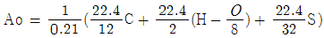
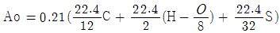
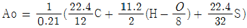
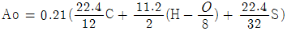
(정답률: 알수없음)
45. 흡착에 대한 다음 설명으로 옳은 것은?
- 화학적 흡착은 흡착과정이 가역적이므로 흡착제의 재생이나 오염가스의 회수에 매우 편리하다.
- 물리적 흡착은 흡착과정에서의 발열량이 화학적 흡착보다 많다.
- 일반적으로 물리적 흡착에서 흡착되는 양은 온도가 낮을수록 많다.
- 물리적 흡착은 분자간의 결합이 화학적 흡착에서보다 더 강하다.
(정답률: 알수없음)
46. 평판형 전기집진기에서 집진극과 방전극의 간격 4cm, 가스 유속 2.4m/sec로서 먼지 입자를 100% 제거하기 위해 요구되는 이론적인 전기집진극의 길이는? (단, 입자의 집진극으로 표류(분리)속도는 0.045m/sec임)
- 0.8m
- 1.6m
- 2.1m
- 7.5m
(정답률: 알수없음)
47. 다음 기체 중 물에 대한 헨리상수(atmㆍm3/kmol) 값이 가장 큰 물질은? (단, 온도는 30℃, 기타조건은 동일하다고 본다.)
- HF
- HCl
- H2S
- SO2
(정답률: 알수없음)
48. 유해가스 처리를 위한 흡수에 관한 설명으로 가장 거리가 먼 것은?
- 두 상(phase)이 접할 때 두상이 접한 경계면의 양측에 경막이 존재한다는 가정을 Lewis-Whitman의 이중경마설이라 한다.
- 확산을 일으키는 추진력은 두 상(phase)에서의 확산물질의 농도차 또는 분압차가 주원인이다.
- 액상으로의 가스흡수는 기-액 두 상(phase)의 본체에서 확산물질의 농도 기울기는 큰 반면, 기-액의 각 경막내에서는 농도 기울기가 거의 없는데, 이것은 두 상의 경계면에서 효과적인 평형을 이루기 위함이다.
- 주어진 온도, 압력에서 평형상태가 되면 물질의 이동은 정지한다.
(정답률: 60%)
49. A집진장치의 입구농도 6g/m3, 입구 유입가스량 10m3이며, 출구농도 0.5g/m3, 출구 배출가스량이 122m3일 때 이 집진장치의 효율은?
- 93.7%
- 92.4%
- 91.7%
- 90.0%
(정답률: 알수없음)
50. 여과집진장치에 사용되는 여포에 관한 설명 중 가장 거리가 먼 것은?
- 여포의 형상은 원통형, 평판형, 봉투형 등이 있으나 주로 원통형을 사용한다.
- 여포는 내열성이 약하므로 가스온도 250℃를 넘지 않도록 주의한다.
- 고온가스를 냉각시킬 때에는 산노점이하로 유지하도록 하여 여포의 눈막힘을 방지한다.
- 여포재질 중 glassfiber는 최고사용온도가 250℃ 정도이며, 내산성이 양호한 편이다.
(정답률: 알수없음)
51. 원추하부의 반지름이 40cm인 사이클론에서 배출가스의 접선속도가 5m/sec일 경우 분리계수는?
- 3.2
- 6.4
- 8.5
- 12.8
(정답률: 알수없음)
52. 크기가 1.2m × 2.0m × 1.5m 인 연소실에서 저위발열량이 10000kcal/kg인 중유를 1.5시간에 100kg씩 연소시키고 있다. 이 연소실의 열발생율은?
- 약 165,246kcal/m3ㆍhr
- 약 185,185kcal/m3ㆍhr
- 약 277,778kcal/m3ㆍhr
- 약 416,667kcal/m3ㆍhr
(정답률: 알수없음)
53. 다음 중 SOx와 NOx를 동시에 제어하는 기술로 거리가 먼 것은?
- filter cage 공정
- 활성탄 공정
- NOXSO 공정
- CuO 공정
(정답률: 알수없음)
54. 다음 중 전기집진장치의 방전극의 재질로서 가장 거리가 먼 것은?
- 롤로늄
- 타타늄 합금
- 고탄소강
- 스테인레스
(정답률: 알수없음)
55. 다음 악취처리방법에 관한 설명으로 가장 거리가 먼 것은?
- 흡착법에서 활성탄으로 효과적으로 제거 가능한 것은 암모니아, 메탄올, 메탄 등이며, 지방족 탄화수소는 거의 효과가 없다.
- 산ㆍ알칼리ㆍ약액세정법에 의해 제거 가능한 대표적인 성분으로는 무기산(염산, 황산)의 희박수용액에 의한 아민류 등의 염기성 성분이다.
- 촉매연소법에서 촉매에 바람직하지 않은 원소로서는 할로겐원소, 납, 아연, 수은등이다.
- 직접연소법은 악취성분을 함유하는 가스를 고온(600~800℃)에서 산화분해하여 탄산가스와 물(수증기)로 변화시킨다.
(정답률: 알수없음)
56. 연료에 대한 다음 설명으로 가장 거리가 먼 것은?
- 4℃ 물에 대한 15℃ 중유의 중량비를 비중이라고 하며, 중유 비중은 보통 0.92~0.97 정도이다.
- 기체연료는 연소시 공급연료 및 공기량을 밸브를 이용하여 간단하게 임으로 조절할 수 있어 부하변동범위가 넓다.
- 중유는 인화점을 기준으로 하여 주로 A, B, C 중유로 분류된다.
- 인화점이 낮을수록 연소는 잘되나 위험하며, C 중유는 보통 70℃ 이상이다.
(정답률: 알수없음)
57. CH4 95%, CO2 2%, O2 1%, N2 2%인 연료가스 11Nm3에 대하여 10.8Nm3의 공기를 사용하여 연소하였다. 이때의 공기비는?
- 1.6
- 1.4
- 1.2
- 1.0
(정답률: 알수없음)
58. 탄소 70kg과 수소 20kg을 완전연소 시키는데 필요한 이론적인 산소의 양은?
- 227kg
- 286kg
- 320kg
- 347kg
(정답률: 알수없음)
59. 다음 중 각종 발생원에서 배출되는 먼지입자의 진비중(S)과 겉보기 비중(SB)가 가장 큰 것은?
- 시멘트킬른 발생먼지
- 카본블랙 먼지
- 골재건조기 먼지
- 미분탄보일러 발생먼지
(정답률: 알수없음)
60. 배출가스내 먼지의 입도분포를 대수확률방안지에 plot한 결과 직선이 되었고, 50% 입경과 84.13% 입경이 각각 10.5㎛와 5.5㎛이었다. 이 때의 기하평균입경은?
- 5.5㎛
- 8.0㎛
- 10.5㎛
- 16.0㎛]
(정답률: 알수없음)
4과목: 대기환경 관계 법규
61. 악취방지법규상 배출허용기준 및 엄격한 배출허용기준의 설정범위와 관련한 다음 설명 중 옳지 않은 것은?
- 배출허용기준의 측정은 복합악취를 측정하는 것을 원칙으로 하지만 사업자의 악취물질 배출 여부를 확인할 필요가 있는 경우에는 지정악취물질을 측정할 수 있다.
- 복합악취의 시료채취는 사업장안에 높이 5m 이상의 일정한 악취배출구와 다른 악취발생원이 혼재한 경우에는 부지경계선 및 배출구에서 각각 채취한다.
- “배출구”라함은 악취를 송풍기 등 기계장치 등을 통하여 강제로 배출하는 통로(자연환기가 되는 창문ㆍ통기관등을 제외한다)를 말한다.
- 부지경계선에서 복합악취의 공업지역에서의 배출허용기준(희석배수)은 1000 이하이다.
(정답률: 알수없음)
62. 대기환경보전법령상 휘발유, 알코올 또는 가스를 사용하는 자동차에서 대통령령으로 정하는 제착자 배출허용기준 적용 오염물질이 아닌 것은?
- 매연
- 일산화탄소
- 질소산화물
- 알데히드
(정답률: 알수없음)
63. 다중이용시설 등의 실내공기질 관리법규상 PM-10의 실내공기질 유지기준이 100㎍/m3이하인 다중이용시설에 해당하는 것은?
- 보육시설
- 대규모 점포
- 실내 주차장
- 여객자동차터미널의 대합실
(정답률: 알수없음)
64. 대기환경보전법상 대기환경규제지역을 관할하는 시도지사는 그 지역이 대기환경규제지역으로 지정ㆍ고시된 후 몇 년 이내에 그 지역의 환경기준을 달성ㆍ유지하기 위한 계획을 수립해야 하는가?
- 1년 이내
- 2년 이내
- 3년 이내
- 5년 이내
(정답률: 알수없음)
65. 대기환경보전법규상 대기오염물질의 배출허용기준과 관련하여 굴뚝 원격감시체계 관제센터로 측정결과를 자동 전송하는 배출시설에 관한 기준이다. ( )안에 알맞은 것은?
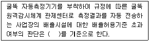
- 매 5분 평균치
- 매 10분 평균치
- 매 30분 평균치
- 매 1시간 평균치
(정답률: 알수없음)
66. 환경정책기본법령상 다음 대기환경기준치 설정항목 중 그 측정방법이 Pulse U.V. Fluorescence Method 인 것은?
- CO
- O3
- NO2
- SO2
(정답률: 19%)
67. 대기환경보전법규상 특정대기유해물질에 해당하지 않는 것은?
- 다이옥신
- 사염화탄소
- 황화수소
- 아세트알데히드
(정답률: 알수없음)
68. 대기환경보전법령상 환경부장관이 특별대책지역의 배출시설로부터 나오는 대기오염물질로 인한 위해방지를 위해 대통령령으로 정하는 바에 따라 배출시설 설치를 제한할수 있는 기준이다. ( ① )안에 가장 알맞은 것은?
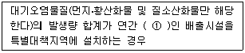
- 5톤 이상
- 10톤 이상
- 25톤 이상
- 50톤 이상
(정답률: 알수없음)
69. 악취방지법규상 악취검사기관의 검사시설ㆍ장비 및 기술인력 기준에서 대기환경기사를 대체할 수 있는 인력요건으로 거리가 먼 것은?
- '고등교육법'에 의한 대학에서 대기환경분야를 전공하여 석사 이상의 학위를 취득한 자
- 국ㆍ공립연구기관의 연구직 공무원으로서 대기환경연구분야에 1년 이상 근무한 자
- 대기환경산업기사를 취득한 후 악취검사기관에서 악취분석용원으로 3년 이상 근무한 자
- '고등교육법'에 의한 대학에서 대기환경분야를 전공하여 학사학위를 취득한 자로서 동일분야에서 3년 이상 근무한자
(정답률: 알수없음)
70. 환경정책기본법령상 미세먼지(PM-10)의 대기환경기준으로 옳은 것은? (단, 연간평균치 기준)
- 50㎍/m3 이하
- 75㎍/m3 이하
- 100㎍/m3 이하
- 150㎍/m3 이하
(정답률: 알수없음)
71. 대기환경보전법규상 공통시설 중 도장시설의 대기오염물질 배출시설에 해당하는 것은?
- 용적 2m3
- 용적 3m3
- 동력 2마력
- 동력 3마력
(정답률: 알수없음)
72. 대기환경보전법규상 대기오염물질 배출시설에 해당되지 않는 것은? (단, 기타사항 제외)
- 소각능력이 시간당 25킬로그램 이상인 폐수소각시설
- 연료사용량이 시간당 200킬로그램 이상인 생활폐기물 고형연료제품 전용시설
- 동력이 10마력 이상인 선별시설(습식 및 이동식은 제외)
- 동력이 10마력 이상인 분쇄시설(습식 및 이동식은 제외)
(정답률: 알수없음)
73. 대기환경보전법규상 환경부장관이 특별대책지역 중 사업장이 밀집되어 있는 구역의 사업장에서 배출되는 오염물질을 총량으로 규제하려는 경우 필수적 고시사항에 해당하지 않는 것은? (단, 그 밖에 총량규제구역의 대기관리를 위하여 필요한 사항은 제외)
- 총량규제구역
- 총량규제 대기오염물질
- 총량규제대상 오염물질 측정기기 설치명세서와 그 도면
- 대기오염물질의 저감계획
(정답률: 알수없음)
74. 대기환경보전법령상 초과부과금 산정기준에서 오염물질 1킬로그램당 부과금액의 크기순서대로 옳게 나열된 것은? (단, 큰금액 ＞ 작은금액)
- 불소화합물 ＞ 황화수소 ＞ 이황화탄소 ＞ 암모니아
- 황화수소 ＞ 불소화합물 ＞ 이황화탄소 ＞ 암모니아
- 황화수소 ＞ 이황화탄소 ＞ 불솧화합물 ＞ 암모니아
- 불소화합물 ＞ 이황화탄소 ＞ 황화수소 ＞ 암모니아
(정답률: 43%)
75. 악취방지법규상 지정악취물질 중 적용시기가 다른 하나는?
- 메틸아이소뷰티르케톤
- 메틸에틸케톤
- 뷰티르알데하이드
- 톨루엔
(정답률: 알수없음)
76. 대기환경보전법규상 특별시장ㆍ광역시장ㆍ도지사 또는 특별자치도지사가 설치하는 대기오염 측정망의 종류에 해당하는 것은?
- 도시지역 또는 산업단지 인근지역의 특정대기유해물질(중금속을 제외한다)의 오염도를 측정하기 위한 유해대기물질측정망
- 도시지역의 휘발성유기화합물등의 농도를 측정하기 위한 광화학대기오염물질측정망
- 도시의 시정장애의 정도를 파악하기 위한 시정거리측정망
- 대기오염물질의 지역배경농도를 측정하기 위한 교외대기측정망
(정답률: 9%)
77. 다중이용시설 등의 실내공기질 관리법규상 신축 공동주택의 시공자가 실시하여야 할 신축 공동주택의 실내공기질 측정항목에 해당하지 않는 것은?
- 페놀
- 에틸벤젠
- 자일렌
- 스티렌
(정답률: 50%)
78. 환경정책기본볍령상 오존(O3)의 대기환경기준으로 옳은 것은? (단, 8시간평균치 기준)
- 0.10ppm 이하
- 0.06ppm 이하
- 0.⑤ppm 이하
- 0.02ppm 이하
(정답률: 알수없음)
79. 대기환경보전법규상 자동차연료 제조기준 중 경유의 황함량 기준은? (단, 2008년 12월 31일 까지)
- 10ppm 이하
- 20ppm 이하
- 30ppm 이하
- 50ppm 이하
(정답률: 알수없음)
80. 대기환경보전법규상 측정기기의 부착ㆍ운영등과 관련된 행정처분기준 중 측정기기의 측정범위등에 관한 프로그램을 조작하여 측정결과를 거짓으로 작성하는 경우의 각 위반차수별(1차~4차) 행정처분기준으로 옳은 것은?
- 1차 : 경고, 2차 : 경고, 3차 : 조업정지 10일, 4차 : 조업정지 30일
- 1차 : 경고, 2차 : 조업정지 10일, 3차 : 조업정지 30일, 4차 : 조업정지 60일
- 1차 : 경고, 2차 : 조업정지 10일, 3차 : 조업정지 30일, 4차 : 허가취소 또는 폐쇄
- 1차 : 경고, 2차 : 조업정지 30일, 3차 : 조업정지 60일, 4차 : 허가취소 또는 폐쇄
(정답률: 알수없음)
VOCs의 인체영향으로 벤젠은 피부를 통해 약 50%정도 침투되어, 체내에 흡수된 벤젠은 주로 근육조직에 분포하게 된다. 이는 벤젠이 인체에 유해한 물질이기 때문에 중요한 정보이다.